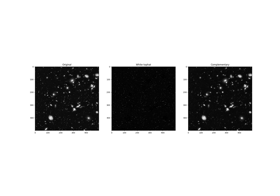
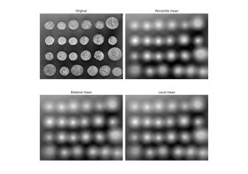
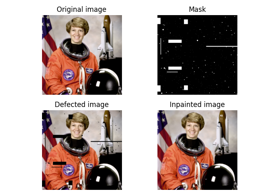
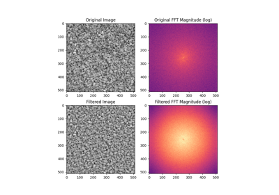
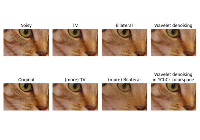
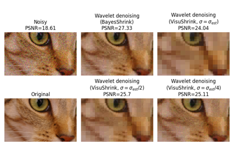
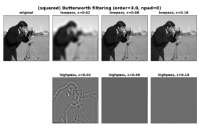
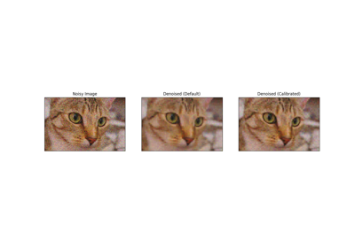

Filtering and restoration#

Removing small objects in grayscale images with a top hat filter
Removing small objects in grayscale images with a top hat filter



Mean filters



Fill in defects with inpainting
Fill in defects with inpainting

Band-pass filtering by Difference of Gaussians
Band-pass filtering by Difference of Gaussians

Denoising a picture



Wavelet denoising

Butterworth Filters

Full tutorial on calibrating Denoisers Using J-Invariance
Full tutorial on calibrating Denoisers Using J-Invariance